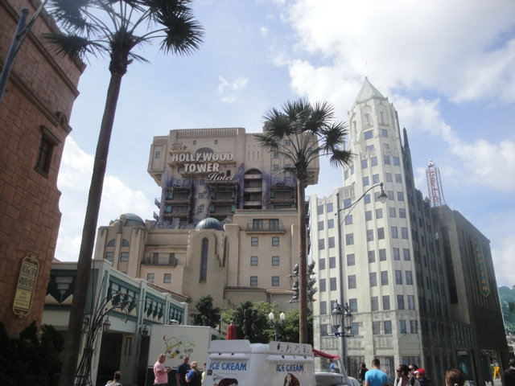

| |
Tower of Terror Review

We're here at Walt Disney Studios Park where we'll reveiwing Tower of Terror. Disneyland Paris' Official Drop Tower. When you walk up to it, the first thing you notice is all the concrete that surrounds it while in Florida, you're surrounded by gardens. But for now, that doesn't matter, then we get in line and go into the hotel lobby. The hotel lobby looks very well done and has a spooky theme to it. Then a cast member will assign you into the library. There, you will see a Twilight Zone Special on the Tower of Terror. Then you go into the Boiler Room. About 5 to 10 minutes later, you're standing in front of the elevator doors, waiting to board. Then when the doors open, you get a glance at the exit hallway where you will exit after the ride. But for now, let's focus on the ride. Once you fasten, your seatbelt, the elevator moves back to the shaft, before going up to the next level. Then when it stops, you see the whole train in a mirror, however, your refection turns into a ghost version of yourself. Then you lower yourselves into the next scene, where you see the haunted family. This is a very dissapointing part of the ride if you've been on Disney World's Tower of Terror, as there is no 5th Dimension. Then after a little bit of background, the dropping begins. You drop two times, getting some great airtime on both drops. Then it rises up to the top of the tower, where you get a great view of Disneyland Paris. Then you drop a level, still in a window, but then you drop back down, then you have all sorts of drops that give you various bits of airtime. Then at the end, you go up to the window one more time, and then you drop back down to the bottom. As you are welcomed back, you come back to the door and go through the boring unthemed exit hallway. Now, I will admit that Florida Tower of Terror kicks it's ass, it is still a very fun ride that I would highly recommend riding it if you go to Disneyland Paris.
8/10
Location: Disneyland Paris
Opened: 2007
Built by: Disney
Last Ridden: July 01, 2012
Tower of Terror Photos
Home
|